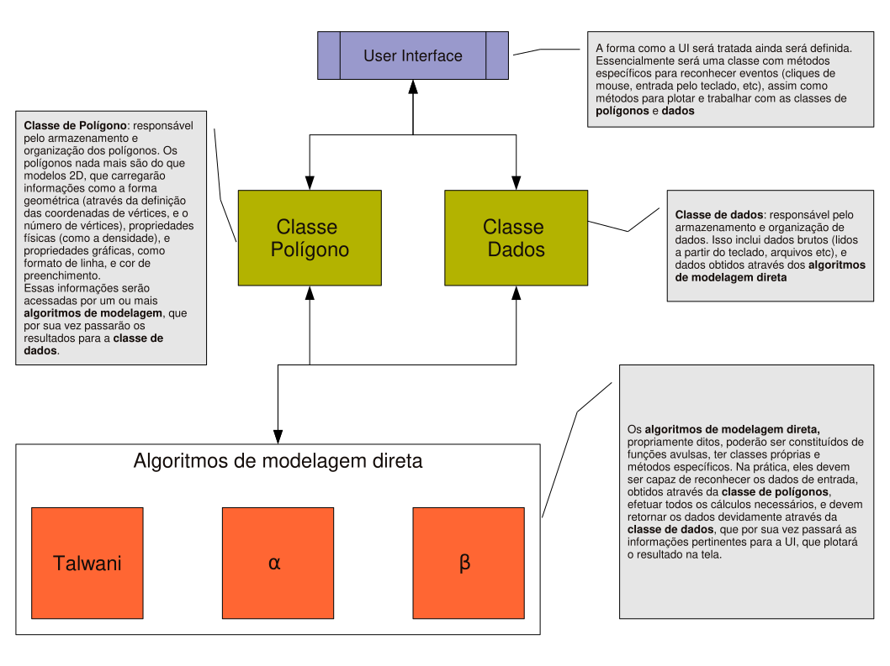
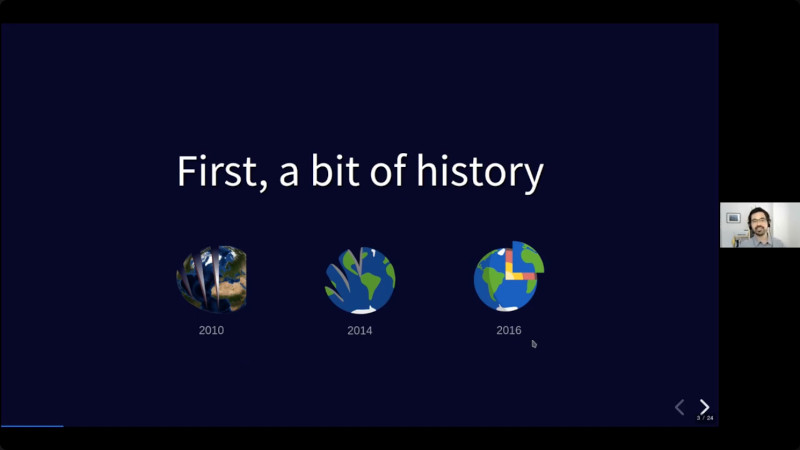

About the project
Fatiando a Terra is a community-developed collection of open-source Python packages aimed primarily at Geophysics (though not exclusively). Our tools are developed by working geoscientists and volunteers from across the globe.
Trivia: Fatiando a Terra is Portuguese for Slicing the Earth, a reference to the project’s Brazilian origins and ambitious initial goals to model the whole planet.
Who we are
The organization structure of Fatiando is outlined in our Governance document. It specifies the existing roles within our community, what are the responsibilities assigned to each one, and how to gain responsibilities within our organization.
Below is a list of the people currently occupying each role and the ones who served previously.


Project Leaders: Leonardo Uieda, Santiago Soler.
Package Maintainers: Leonardo Uieda (verde, pooch, harmonica, boule, bordado, magali, ensaio), Santiago Soler (harmonica, choclo, pooch), Matt Tankersley (harmonica).
Package Authors:
The GitHub repositories for each library contain AUTHORS.md files which list
everyone who is considered an author of that library.
Our Authorship Guidelines define the rules for attributing authorship.
Project Founders: Vanderlei C. Oliveira Jr, Jose Fernando Caparica Jr, André Lopes Ferreira, Henrique Bueno dos Santos, Leonardo Uieda.
Former Steering Council: Agustina Pesce, Leonardo Uieda, Lu Li, Mariana Gomez, Santiago Soler.
Take part in our community: Open-source is more than just code, it’s about the people involved. One of the most impactful ways in which you can help is by being involved in the project!
Funding and support
Development and maintenance of the Fatiando a Terra project is generously supported by:
- Community and financial support from the Software Underground.
- Postdoc position salary for Santiago Soler from the Geophysical Inversion Facility, University of British Columbia (from 2022).
- Salary for Leonardo Uieda from the Universidade de São Paulo (from 2023), University of Liverpool (2019-2023), and Universidade do Estado do Rio de Janeiro (2014-2017).
- A PhD scholarship for Santiago Soler from CONICET, Argentina (2017-2022).
- MSc and PhD scholarships for Leonardo Uieda from Capes, Brazil (2010-2016).
The geophysics Python family
Fatiando is a part of the larger family of geophysics free software in Python, which has grown tremendously since we started development in 2010:
We design our software to complement what is offered in other packages. Check them out as well!
Brief history
The Fatiando a Terra project had its start around 2008 as a C++ program to perform geophysical modeling of various data types (gravity, magnetics, seismic, etc.). At least that was what a small group of Geophysics undergraduate students at the University of São Paulo, Brazil, set out to do. Unsurprisingly, this overly ambitious goal was never achieved.

In 2010, we started developing the fatiando
Python library, which included several state-of-the-art methods for forward
modeling and inversion of gravity and magnetic data, as well as toy problems in
other fields useful for teaching.
Development of this library was discontinued in 2018 as our focus shifted to
our newer and more well-scoped libraries.
This blog post announcing the shift explains the
reasoning behind this decision.
Legacy version:
The last version that was released of fatiando is v0.5.
The documentation for it can still be accessed at
legacy.fatiando.org.
We also gave a few talks that cover some of the history of the project, many of which are recorded and up on our YouTube channel!
